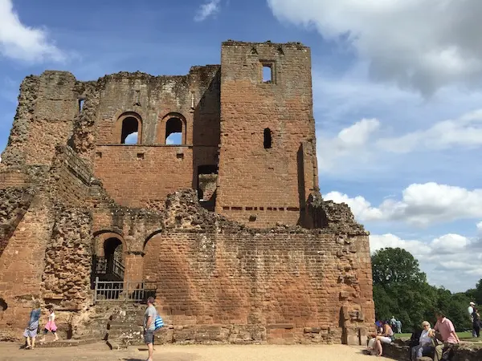
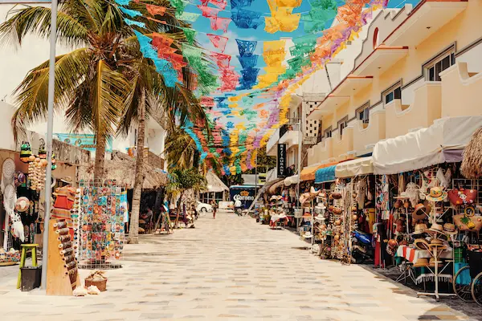
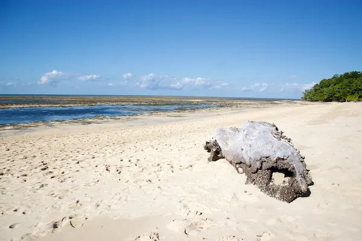

Tour Cozumel with us
Cozumel island is a small island with a big history. Why not come on a guided tour with our trained tour guides and get to know our culture and heritage a little more. We offer guided tours and self-drive options and can cater to groups as large as 60 people. Listed below are some of the incredible sites and places that you simply cannot miss on your trip to Cozumel. If any of these sites catch your eye, please use our Contact Us page to get in touch and book one of these incredible, once in a lifetime tours.
A Brief History of the Island
Cozumel was a commercial and ceremonial centre during the Mayan period (about 250 to 950 CE), and the island has several small archaeological sites. In 1518 Juan de Grijalva led the first Spanish expedition to Cozumel. In 1519 Hernán Cortés used the island as a base for Spanish efforts to conquer the Maya. During most of the Spanish colonial era, Cozumel was only sparsely populated, but trading ships and pirates occasionally sought shelter and replenished supplies on the island, which was protected behind offshore reefs. Area 189 square miles (489 square km). Pop. (2005) 71,401; (2010) 77,236.Information courtesy of https://www.britannica.com/place/Cozumel
Tour 1 - Cozumel Ruins
Built in the late 1300's, these ruins are from an unknown group of settlers who inhabited the island looking for shelter from the many pirates who wreaked havoc in the Caribbean during the time. Legend says that they buries their treasure somewhere in the grounds of these ruins and that one day, an ancient ritual will be completed at the grounds which will reveal the site of the treasure. Some claim the treasure is simply pirate gold. Others claim that it is the chalice thought to have been the Holy Grail. Come and check out the site and see if you can find any clues to its secret past!
Tour 2 - Cozumel Town Center Markets
Come and see the famous Cozumel Town Markets. Barter and haggle your way down the street and grab yourself some amazing local arts, crafts and delicacies. If you are on the Island in November, you cannot miss the Cinco De Mayo celebrations (Day of the dead) where the whole town comes out for an extravagant parade to celebrate the lives of those they have lost. It simply cannot be missed!
Tour 3 - Famous El Puerto Diablo Beach
Yes you read it right "Devil Chicken Beach" once feared for the fearsome breed of chicken which roamed its sands, attacking tourists and locals alike. The chickens have long since gone, eaten by pirates and cooked into chilli, the only remnants of these little devils are said to be strange scratching sounds that can be heard in the scrub at night. What remains at Devil Chicken Beach is its pure white sand. Said to be some of the purest sand found on earth, this sand is a fantastic natural exfoliant and has remarkable properties for healing the skin and cleaning your jewellery. The beach is also home to Uncle Bob's Dive Company, learn to scuba dive on the pristine reefs and swim under the waters looking for lost pirate treasure. Your kids can even go snorkeling in the shallows and play with the local fish and sealife who are very tame and friendly to visitors.